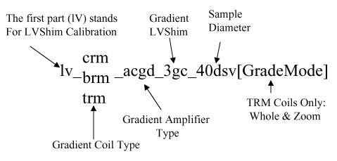

Operating Documentation
Direction 5440000, Rev# 5
Signa HDxt Service Methods
Module Version 2.0, Version Date 3/25/09
Operating Documentation |
The LVShim software consists of three elements:
The LVShim PSD: Defines the pulse sequence data base (PSD) used to acquire the LVShim scan data.
LVShim Calibration File Generator: Generates LVShim calibration files.
LVShim Analysis Tool: Analyzes the scan data acquired by the LVShim PSD and computes the magnetic field inhomogeneity and new shim current settings.
The Subjects covered in this documents are:
Step , Magnet Serial Number
Step , Calibration File Type
Step , Calibration File Name
Step , Shim Type
Step , Image Data
Step , Operation Mode
Step , Display Mag and Phase Diff Images
LVShim calibration files contain coil characterization data used by the LVShim Analysis Tool to calculate the new currents needed to correct for magnetic field inhomogeneity. Generic shim calibration files are supplied with the system software for all gradient coils and for GE S/C shim coils.
The magnet serial number is used by LVShim to determine the appropriate set of calibration files to display during the shimming process. The magnet serial number must be correctly entered in the MR configuration file. (The Magnet Type field is no longer used by system software tools.) Table 1 shows the value for each magnet type.
Table 1: Magnet Serial Values
| Magnet Type | Value | Magnet Type | Value | |
| S-III | Dxxxx | Cx 1.5T | Nxxxx | |
| S-IV | Gxxxx | LCC 1.5T | Rxxxx | |
| S-V | Jxxxx | LCC300 (3.0T) | Wxxxx | |
| S-X | Xxxxx | 3T/94 | 3xxxx | |
| S-Xc_1 | Kxxxx | |||
| S-Xc_2 | Lxxxx |
The software displays only the Calibration File Types appropriate for the type of magnet being shimmed. Refer to Table 2.
Table 2: Calibration File Types for Each Type of Magnet
| Magnet Type | Calibration File Type | ||||||
| Gradient | Resistive | Res and Grad* | S/C 12 1.5T | S/C 18 1.5T | S/C 14 3.0T | S/C 18 3.0T | |
| S-III | X | X | X | ||||
| S-IV | X | X** | X | ||||
| S-V | X | X | |||||
| Cx, LCC 1.5T | X | X | |||||
| Cx, LCC 1.0T | X | ||||||
| LCC300*** | x | x | x | ||||
| 3T/94*** | x | x | |||||
| * The Res and Grad shim type
always displays for S-I magnets, but displays for S-II/S-III magnets
only when the Spectroscopy RF Amplifier variable is set to Yes in the MR Configuration file. ** The resistive shim option for GE S-IV magnets (catalog no. M1040CH) consists of three coils: Z2, ZX, and ZY. The resistive shim power supply assembly contains six power supplies (Z2, Z3, ZX, ZY, X2-Y2, and XY), but only Z2, ZX, and ZY are used. However, the software does not support this three-coil matrix at this time. *** For 3T/94 and LCC300 magnets: Even though the calibration file shows 18 coils, only 14 coils exist in the magnet. | |||||||
Illustration 1 is an example of a shim calibration file with the named components explained. Illustration 2 is an example of a gradient shim calibration file. (Refer to Table 3 for a list of the available coils.)
Illustration 1: Breakdown of a Shim Calibration File Name

Illustration 2: Example of Gradient Shim Calibration File

Table 3: Coil Types
| Coil | Description |
| 3gc | Gradient (All Magnets) |
| 9rgc (Note 1) | Gradient/Resistive (S-I, S-II, and S-III) |
| 6rc | Resistive (S-I, S-II, and S-III) |
| 18sc | 18-Coil Supercon (S-II, S-III, S-IV, S-X, S-XC_1, Cx 1.5T, Cx 1.0T, LCC 1.5T (For 3T/94 and LCC300 - See Note 2.) |
| Note 1: The resistive shim option
for GE S-IV magnets (catalog no. M1040CH) consists of three coils:
Z2, ZX, and ZY. The resistive shim power supply assembly contains
six power supplies (Z2, Z3, ZX, ZY, X2-Y2, and XY), but only Z2, ZX,
and ZY are used. However, the software does not support this three-coil
matrix at this time. Note 2: The 3T/94 and LCC 300 calibration file lists 18 coils, even though only 14 coils exist in the magnet. | |
The S/C Shim Calibration files are divided into magnet/coil type and by four file types: 22 dsv.full, 32 dsv.full, 40 dsv.full, 45 dsv.full, 40 dsv.half, and 45 dsv.half. The number signifies the diameter of the spherical volume.
The 22 dsv.full files are used during Rough and Gradient LVShim. The 40 dsv.full (for CRM Body Coil) and 45 dsv.full files are used during Main LVShim.
The 40 dsv.half and 45 dsv.half files are half current files, used in cases where the full file is "overshooting" the target value.
The 32 dsv.full files are for troubleshooting purposes only.
Table 4 lists the generic calibration files supplied with the system.
Table 4: Generic Gradient and S/C Shim Calibration Files
| File Type | Magnet Type | Shim Calibration File Names |
| 3-Coil Gradient | All | lv_brm_acgd_3gc_22dsv |
| lv_brm_acgd_3gc_45dsv | ||
| lv_crm_acgd_3gc_22dsv | ||
| lv_crm_acgd_3gc_40dsv | ||
| lv_trm_acgd_3gc_22dsv.WHOLE | ||
| lv_trm_acgd_3gc_22dsv.ZOOM | ||
| lv_trm_acgd_3gc_40dsv.ZOOM | ||
| lv_trm_acgd_3gc_45dsv.WHOLE | ||
| 14-Coil Superconductive | LCC300 | lv_30t_18sc_22dsv.corona |
| lv_30t_18sc_22dsv.corona.half | ||
| lv_30t_18sc_32dsv.corona | ||
| lv_30t_18sc_32dsv.corona.half | ||
| lv_30t_18sc_40dsv.corona | ||
| lv_30t_18sc_40dsv.corona.half | ||
| lv_30t_18sc_45dsv.corona | ||
| lv_30t_18sc_45dsv.corona.half | ||
| 18-Coil Superconductive | GE S-II, S-III, S-IV, Cx 1.5T, LCC 1.5T, LCC 1.5T (RB) | lv_15t_18sc_22dsv.full |
| lv_15t_18sc_32dsv.full | ||
| lv_15t_18sc_40dsv.full | ||
| lv_15t_18sc_45dsv.full | ||
| lv_15t_18sc_40dsv.half | ||
| lv_15t_18sc_45dsv.half | ||
| lv_15t_18sc_45dsv.rb | ||
| 12-Coil Superconductive | GE S-V | lv_15t_12sc_22dsv.full |
| lv_15t_12sc_32dsv.full | ||
| lv_15t_12sc_40dsv.full | ||
| lv_15t_12sc_45dsv.full | ||
| lv_15t_12sc_40dsv.half | ||
| lv_15t_12sc_45dsv.half | ||
| 3-Coil Gradient | 3T/94 | lv_crm_acgd_3gc_40 |
| lv_crm_acgd_3gc_40 |
The software displays only the shim types that are associated with the magnet being shimmed. Table 5 shows the shim types for each magnet. When Test is selected as the Shim Type, new shim currents are not calculated during LVShim analysis.
Table 5: Types of Shims Available
| Magnet Type | Shim Type Labels | |||
| S-III | Gradient | Res and Grad* | Sup18_1.5T | Test |
| S-IV** | Sup18_1.5T | |||
| S-V | Sup12_1.5T | Passive | ||
| Cx, LCC 1.5 | Sup18_1.5T | |||
| LCC300 | Sup18_3.0T | |||
| 3T/94 | Sup18_3.0T | |||
| * The Res and Grad shim type always
displays for S-I magnets, but displays for S-II/S-III magnets only
when the Spectroscopy RF Amplifier variable is set to yes in the MR Configuration file. ** The resistive shim option for GE S-IV magnets (catalog no. M1040CH) consists of three coils: Z2, ZX, and ZY. The resistive shim power supply assembly contains six power supplies (Z2, Z3, ZX, ZY, X2-Y2, and XY), but only Z2, ZX, and ZY are used. However, the software does not support this three coil matrix at this time. | ||||
Image Data refers to the exam, series and image number of the image data set to be processed. If an LVShim scan was just performed, the program automatically picks up the last exam, last series and first image number of the last set of images scanned, and makes it the default choice. If the last scan was not an LVShim scan, Image Data is shown as none selected.
Select this menu item when the image data displayed by the software are incorrect. When Image Data is selected, the software prompts for the correct exam, series and image numbers. If the exam, series, or image number of the image data to be processed is not known, enter 0 (zero) when prompted for a number. This will provide a list of the existing exams, series or images.
For the TwinSpeed, take care to select the series corresponding to the same GradMode highlighted upon entering the LVShim Analysis Tool.
There are two operation mode options: Service and Research. Table 6 describes them.
Table 6: Service and Research Operation Modes
| Option | Description |
| Service | This mode should be used for Rough and Main LvShim and Gradient shimming for all magnet types. This mode also includes all the LVShim features needed to build a shim calibration file. |
| Research | This mode should be used for Rough and Main LVShim troubleshooting only. While in the Research mode, the user can configure out selected coils during shimming. |
This option allows the display of the magnitude image and masked phase difference image (each in a separate window) after the image data is processed. Both windows are updated when an alternate scan plane is selected. The magnitude image and the masked phase difference image are displayed as shown in Illustration 3. These windows will initially display in the upper right corner of the screen, then relocate as necessary for viewing of LVShim Analysis window.
Illustration 3: Magnitude and Masked Phase Difference Images

The calibration file name token is used to help distinguish similar calibration file names from each other. The token is attached at the end of the calibration file name. (Refer to Step , Calibration File Name, for more information about the calibration file name.)